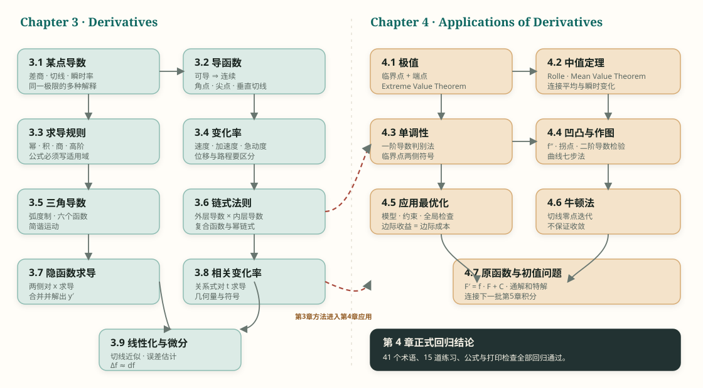

新增内容
完整制作第 3 章 3.1–3.9：导数定义、求导规则、变化率、三角函数、链式法则、隐函数、相关变化率、线性化和微分。
本批完成第 3 章的完整学习结构，并对第 4 章做正式回归。核心主线从差商极限出发，经求导法则、运动与相关变化率，最后进入线性化和微分；第 4 章继续用这些导数研究极值、图形、最优化、数值求根与反求原函数。
00 · Batch Brief
完整制作第 3 章 3.1–3.9：导数定义、求导规则、变化率、三角函数、链式法则、隐函数、相关变化率、线性化和微分。
对已认可的第 4 章执行术语、定理、例题、练习、公式、链接和打印回归，不自动免检。
沿用 B0/B1 的术语、知识点映射、三级答案、来源双定位、离线公式和批次QA结构。
01 · Dependency Map

差商极限给出导数；求导规则把极限计算变成结构化运算；链式法则处理复合函数，并支撑隐函数求导、相关变化率和线性近似。
一阶导数给出增减与临界点，二阶导数给出凹凸与极值类型；最优化在这些判别之上完成全局检查，Newton 法使用切线，原函数反转求导。
02 · English Terminology
第4章的41个术语仍由已认可金样提供；本表只补充第3章新增的导数术语，并在章内建立“定义—规则—应用”的连接。
| English term | 中文译名 | 简明定义 | 对应节 | 关键公式 / 提示 |
|---|
| 易混项 | 关键区别 | 核对问题 |
|---|---|---|
| average rate / instantaneous rate | 平均值来自割线斜率，瞬时值来自 h→0 的极限。 | 是否已经取极限？ |
| differentiable / continuous | 可导一定连续；连续未必可导。 | 是在说明可导，还是只说图像连续？ |
| velocity / speed | 速度有方向，速率是速度绝对值。 | 题目问运动方向还是运动快慢？ |
| product rule / chain rule | 前者处理乘积，后者处理复合。 | 函数是两个因子相乘，还是函数套函数？ |
| implicit / explicit differentiation | 前者直接对关系式求导，后者先解出显函数。 | y 是否容易单独解出？ |
| differential / derivative | dy 是变化量近似，dy/dx 是导数。 | 题目要估计增量还是求斜率？ |
New Chapter Summary
把切线斜率和瞬时变化率统一为导数，再通过一组可证明的规则处理多项式、三角函数、复合函数和隐式关系。
切线斜率被定义为割线斜率的极限；同一个极限也解释为函数在该点的瞬时变化率。若差商趋于无穷或左右不一致，就不能得到有限导数。
极限必须存在且有限；x₀ 必须在函数定义域内。
让点 x 变化，导数从某点数值升格为新的函数 f′。导数定义域可能比原函数小；在角点、尖点、垂直切线或剧烈振荡处可能不可导。可导一定连续，但连续不一定可导。
逆命题不成立；|x| 是最直接的反例。
求导规则把反复计算极限变为结构化运算。幂法则适用于所有使幂有定义的真实指数；乘积和商各有独立公式，高阶导数则是对导函数继续求导。
需保证 xⁿ 与 xⁿ⁻¹ 都有定义。
商函数要求分母 v≠0；不要漏写平方或交换项的次序。
导数表示瞬时变化率。位置函数的导数是速度，速度的导数是加速度，继续求导得到急动度；边际成本、收益和利润则是经济学中的瞬时变化率。
速度符号表示方向，速率 |v| 非负；位移与总路程不同。
正弦导数依赖 sinh/h→1 与 (cosh−1)/h→0；这些极限要求弧度制。得到 sin、cos 导数后，由商法则推导其余四个三角函数导数，并用于简谐运动。
tan、cot、sec、csc 的公式只在函数本身有定义处成立。
复合函数的变化率由外层导数与内层导数相乘。多个壳层可重复使用，幂链式则是幂法则与链式法则的组合。
外层在 g(x) 处可导，内层在 x 可导；外层导数必须在正确的内点求值。
方程 F(x,y)=0 可能不定义单一显函数，但仍可把 y 视作局部可导函数，对 x 求导后合并含 y′ 的项。曲线切线斜率可能同时依赖 x 与 y。
对 y 求导时使用链式法则；对 xy 等项同时使用乘积法则。
当多个变量都随时间变化，先用几何或物理关系把它们连接，再对 t 求导。符号表示增减方向，代入的是“该瞬间”的数值，不能把变量当成常量。
在 a 附近，曲线可由切线 L(x) 近似。微分 dy=f′(x)dx 表示切线变化量，用 df 估计真实变化 Δf；离中心越远或二阶变化越大，误差通常越明显。
要求 f 在 a 可导；近似中心越近通常越准确。
dx 是自变量变化，dy 是切线变化；真实变化为 Δy。
| 教材例题 | 结论 | 位置 |
|---|---|---|
| Example 1（3.1） | y=1/x 在 x=a 的斜率为 −1/a²；斜率 −1/4 出现在两处。 | 教材 p.121 / PDF p.122 |
| Example 2（3.1） | 自由落体 s=4.9t² 的瞬时速度在 t=1 为 9.8 m/s。 | 教材 p.122 / PDF p.123 |
| Example 4（3.2） | |x| 在 0 的左右导数不同，因此不可导。 | 教材 p.127 / PDF p.128 |
| Example 4（3.3） | y=x⁴−2x²+2 在 x=−1,0,1 有水平切线。 | 教材 p.136 / PDF p.137 |
| Example 3（3.4） | 自由落体位置 s=4.9t² 给速度 v=9.8t、加速度 9.8。 | 教材 p.145 / PDF p.146 |
| Example 3（3.5） | 弹簧位置 s=5cos t 给 v=−5sin t、a=−5cos t。 | 教材 p.154 / PDF p.155 |
| Example 4（3.6） | tan(5−sin2t) 的导数为 −2cos2t·sec²(5−sin2t)。 | 教材 p.161 / PDF p.162 |
| Example 2（3.7） | x²+y²=25 在 (3,−4) 的切线斜率为 3/4。 | 教材 p.167 / PDF p.168 |
| Example 2（3.8） | 测角仪在 150 m 外，θ=π/4 时气球上升速率为 42 m/min。 | 教材 p.173 / PDF p.174 |
| Example 2（3.9） | √(1+x) 在 x=3 的线性化为 (5+x)/4。 | 教材 p.182 / PDF p.183 |
可导必连续，连续不必可导；角点就是反例。
(uv)′ 有两项，不是 u′v′，也不是只写 u′v。
“外层求导、内层保留”后仍要乘 g′(x)。
速度可负；总路程和速率使用 |v|。
对 y 的函数求导时要乘 y′；xy 还要用乘积法则。
关系式必须在对 t 求导时把所有变量当作 t 的函数。
04 · Golden Regression
第 4 章的完整内容继续保存在第4–5章金样页中。本批不复制修改它，而是逐节验证内容、来源、公式、练习、导航和打印标准。下列链接直接回到金样对应节。
| 节 | 回归检查 | 证据 | 状态 |
|---|---|---|---|
| 4.1 Extreme Values | 闭区间候选点、EVT、端点与不可导点表述 | 41个第4章术语之一；Q4-01/Q4-03答案与来源一致 | 通过 |
| 4.2 Mean Value Theorem | Rolle、MVT和三个推论条件完整 | Q4-04、Q4-05、Q4-10与本地KaTeX公式 | 通过 |
| 4.3 Monotonic Functions | 一阶导数符号与局部极值 | Q4-06答案与4.3概念表一致 | 通过 |
| 4.4 Concavity and Curve Sketching | 凹凸、拐点、二阶导数检验和七步作图 | Q4-07、Q4-14；公式渲染无错误 | 通过 |
| 4.5 Applied Optimization | 可行域、约束、端点、全局检查 | Q4-09、Q4-10计算结果复算 | 通过 |
| 4.6 Newton's Method | 迭代公式、停止检查和失败风险 | Q4-11；章节导航与打印内容完整 | 通过 |
| 4.7 Antiderivatives | 原函数、常数、初值问题与运动 | Q4-12、Q4-15；与第3章导数形成反向关系 | 通过 |
第4章41个术语、15道练习、7个节、关键公式与来源记录均通过回归；没有发现P0/P1缺陷。
第3章的导函数、二阶导数、切线近似、隐函数和相关变化率分别支撑第4章的变化率、图形、Newton法与优化。
05 · Deliberate Practice
每题对应第3章节与知识点，先独立完成，再依次展开三级答案。第4章原练习仍可由金样页访问并已通过回归。
06 · Recall & Diagnosis
| 练习编号 / 知识点 | 错误类型 | 应回看的内容 |
|---|---|---|
尚未编辑
07 · Quality Gate
| 检查项 | 结果 | 证据 / 说明 | 缺陷等级 |
|---|---|---|---|
| G1 版本与来源 | 通过 | 第3章教材页120–200和PDF页121–201逐节核对。 | 无 |
| G2 章节覆盖 | 通过 | 3.1–3.9全部覆盖；第4章4.1–4.7逐节回归。 | 无 |
| G3 术语 | 通过 | 第3章新增术语表完整；第4章41个术语回归通过。 | 无 |
| G4 定理与公式 | 通过 | 链式法则与第4章定理条件逐项核对；KaTeX错误为0。 | 无 |
| G5 例题结论 | 通过 | 第3章10个代表例题锚点均标教材页与PDF页。 | 无 |
| G6 练习与答案 | 通过 | 第3章15道新题五类题型；第4章15道旧题回归通过。 | 无 |
| G7 计算与渲染 | 通过 | 37项代表性计算复算通过；12个页面公式由本地KaTeX渲染，错误为0。 | 无 |
| G8 图表与链接 | 通过 | B2知识图、第4章各节回链、术语和练习检索完整。 | 无 |
| G9 网页与打印 | 通过 | 桌面/移动端无宽度溢出；批次PDF完成逐页检查。 | 无 |
| G10 版权与版本 | 通过 | 原创提炼与练习，未复制整节教材，未混入外部资料。 | 无 |
第4章已经认可但不能作为免检理由。已建立逐节回归表和练习引用，避免金样与正式批次混同。
第3章公式密度高且应用链长。术语表将隐函数、相关变化率、线性化和微分分开定义。
重点检查复合函数漏内层导数、隐函数漏y′、相关变化率符号以及线性化方向。
第4章只回归，不重写；第5–6章未启动。任何跨批改动必须记录在质量台账。
08 · Source Ledger
| 节 | 教材页 | PDF物理页 | 本章内部标题 |
|---|---|---|---|
| 3.1 | 120–123 | 121–124 | 切线、斜率和某点导数 |
| 3.2 | 124–131 | 125–132 | 导函数、可导和连续 |
| 3.3 | 132–141 | 133–142 | 求导规则和高阶导数 |
| 3.4 | 142–150 | 143–151 | 变化率、运动和边际量 |
| 3.5 | 151–157 | 152–158 | 三角函数导数 |
| 3.6 | 158–165 | 159–166 | 链式法则 |
| 3.7 | 166–170 | 167–171 | 隐函数求导 |
| 3.8 | 171–179 | 172–180 | 相关变化率 |
| 3.9 | 180–191 | 181–192 | 线性化与微分 |
| Ch.4 | 201–265 | 202–266 | 调用已认可金样，仅做正式回归 |